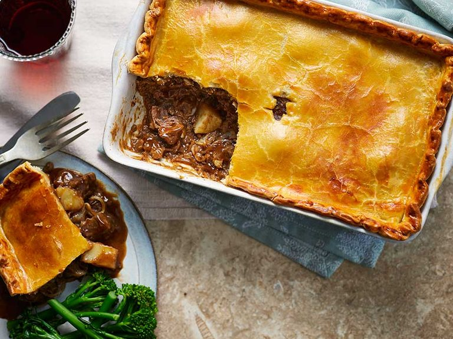

مواد لازم:
- روغن زیتون: 2 قاشق غذاخوری
- هویج: 1 عدد
- پیاز: 1 عدد
- ساقه کرفس: 1 ساقه
- گوشت چرخ کرده: 500 گرم
- سرکه: 60 میلی لیتر
- سس ووسترشر: 1 قاشق غذاخوری
- آویشن: 2 شاخه
- رزماری: 2 شاخه
- رب گوجه فرنگی: 1 قاشق غذاخوری
- آب گوشت: 450 میلی لیتر
- نمک و فلفل: به میزان لازم
- سیب زمینی: 800 گرم
- شیر: 60 میلی لیتر
- کره: 60 گرم
طرز تهیه:
مرحله اول
ستور غذا پای کلبه یا شپرد یا چوپان نام های دیگر پای سیب زمینی در دنیا شناخته شده و در یک قابلمه چدنی، با شاخههای آویشن تازه و مقداری پوره سیبزمینی برداشته شده تا گوشت چرخکرده زیر آن نشان داده شود. این غذای سنتی بریتانیایی در بهترین حالت یک غذای راحتی برای خانواده است و بسیار آسان در خانه درست می شود. هویج و پیاز را پوست گرفته و مکعبی خرد کنید. ساقه کرفس ، مکعبی ریز خرد کنید.آب سبزیجات یا گوشت گاو نیاز دارید.
مرحله دوم
یک تابه مناسب فر متوسط (26 سانتی متر/10 اینچ) را با 2 قاشق غذاخوری روغن زیتون روی حرارت ملایم گرم کنید. هویج ، کرفس و پیاز را اضافه کنید و تفت دهید، مرتباً حدود 5 دقیقه هم بزنید تا سبزیجات نرم شوند. سپس سبزیجات را تا زمانی که لازم باشد در ظرفی بریزید. قابلمه را روی حرارت متوسط قرار دهید و گوشت چرخ کرده را به آن اضافه کنید و مرتب هم بزنید تا قهوه ای شود، سرکه را در آن بریزید و اجازه دهید تبخیر شود. سپس با یک قاشق چربی اضافی را بردارید.
مرحله سوم
سبزیجات را دوباره به آن اضافه کنید، سپس سس Worcestershire و سپس رب گوجه فرنگی، آویشن و شاخه های رزماری را اضافه کنید و با هم زدن همه مواد، برای 2 دقیقه دیگر بپزید.مایه کیک را در قابلمه بریزید و بگذارید به جوش بیاید و به مدت 20 دقیقه بجوشانید و درب قابلمه را ببندید. درب آن را بردارید و 10 دقیقه دیگر به پخت ادامه دهید. شاخه های آویشن را دور بیندازید و با نمک دریا و فلفل سیاه تازه خرد شده مزه دار کنید.
مرحله چهارم
در همین حین فر را با دمای 180 درجه سانتیگراد / فن 160 درجه سانتیگراد / گاز 4 گرم کنید. ماهیتابه را از روی حرارت بردارید و روی گوشت را با پوره سیب زمینی آماده کنید (به روش زیر مراجعه کنید)، سپس روی آن را با چنگال قرعه کشی کنید. از طرف دیگر، پوره سیب زمینی را داخل کیسه ای بریزید و روی گوشت را لوله کنید. ماهیتابه را به فر منتقل کنید و به مدت 10-15 دقیقه بپزید و سپس 5 دقیقه دیگر زیر گریل قرار دهید. از فر خارج کنید و اجازه دهید شپردز پای 5 دقیقه قبل از سرو استراحت کند.
مرحله پنجم
برای پوره سیب زمینی: سیب زمینی ها را در یک قابلمه بزرگ بریزید، روی آن را با آب سرد بپوشانید و 1 قاشق چایخوری نمک به آن اضافه کنید. بگذارید بجوشد، درب آن را باز کنید و حدود 20 دقیقه یا تا زمانی که سیب زمینی ها نرم و پخته شوند، بجوشانید.پس از آماده شدن سیب زمینی ها را در آبکش بریزید و در حالی که هنوز داغ است پوست بگیرید. در این فاصله شیر خود را گرم کنید.سیب زمینی ها را در یک کاسه بزرگ بریزید، کره نرم شده را به آن اضافه کنید و با کمک پوره سیب زمینی له کنید.شیر گرم شده را به آرامی داخل آن بریزید و به له کردن سیب زمینی ها ادامه دهید تا به بافت دلخواه برسید. با نمک و فلفل و در صورت تمایل کمی جوز هندی مزه دار کنید.
